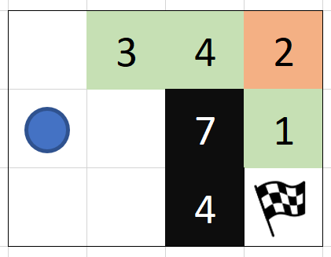

Soutěž v programování — 33. ročník
Celostátní kolo 2018/2019
Naprogramujte upravenou hru Pac-Man, ve které hráč sbírá jídlo, obchází zdi, vyhýbá se bombám a snaží se dojít do cíle dříve, než mu dojde všechna energie. Můžete také naprogramovat umělou inteligenci, která Pac-Mana sama dovede bezpečnou cestou až do cíle.
Oproti klasické hře zde nejde o čas a navíc všichni duchové zmizeli! Hra se tím ovšem nestala lehčí, protože duchové za sebou zanechali bomby. Ba co hůř, v naší variantě hry musí Pac-Man na každý krok vynaložit energii — a pokud mu dojde energie dřív, než dojde do cíle, je to game over. Dokážete Pac-Mana přesto provést bludištěm?
Upravený Pac-Man je tahová hra. Pac-Man začíná na své počáteční pozici s počátečním množstvím energetických jednotek a jeho úkolem je projít bludištěm do cíle. V každém tahu se pohne vodorovně nebo svisle o jedno políčko, což ho stojí 1 energetickou jednotku a pak se provede efekt políčka, na které Pac-Man vstoupil. Pokud i poté má Pac-Man stále alespoň 1 energii, tak následuje další tah. Pokud ale má Pac-Man poté 0 nebo méně energie, není-li v cíli, hra končí neúspěchem.
Efekty políček:Počáteční a cílové políčko jsou vždy volná políčka — není na nich jídlo, zeď ani bomba.
Skladba tahu tedy je:
textový formátnebo formát JSON. Nemusí podporovat oba formáty, ale získáte více bodů, pokud budete podporovat formát JSON. Připomínáme, že máte právo stáhnout z internetu knihovnu pro práci s JSON soubory. Pokud podporujete JSON, je pak už zbytečné podporovat i
textový formát.
V textovém formátu
je na prvním řádku šířka a výška hracího plánu, na druhém řádku počáteční stav Pac-Mana, na
třetím řádku souřadnice cíle a na dalších N řádkách popis řádků hracího plánu:
M,N x0,y0,e x1,y1 řádek1 řádek2 ... řádekN
Ve formátu JSON má vstupní soubor tuto strukturu (může mít jiné množství bílých znaků):
{
"SIRKA": M,
"VYSKA": N,
"START": { "X": x0, "Y": y0, "E": e },
"CIL": { "X": x1, "Y": y1 },
"PLAN": [
"řádek1",
"řádek2",
...
"řádekN"
]
}
V obou formátech:
Máte zaručeno, že validní vstupní soubor nebude mít nikdy větší pole než 20×20 políček.
Pokud byste například načetli tento soubor v textovém formátu:
4,3 1,2,10 4,3 V,J3,J4,B2 V,V,Z7,J1 V,V,Z4,V
tak výsledek bude vypadat nějak takto:

a Pac-Man začne s 10 energetickými jednotkami.
Hrací plán můžete znázornit podle vlastního uvážení, ale dodržte prosím tyto pokyny:
Umožněte uživateli také načíst další soubor znovu bez nutnosti restartovat program.
Umožněte hráči hrát tuto hru tak, že bude ovládat Pac-Mana skrz bludiště. Hra by měla zobrazovat aktuální energii Pac-Mana a aktualizovat jeho pozici a stav hracího plánu po každém tahu. Hráč by se měl dozvědět, když hru prohraje nebo vyhraje.
Ovládání by mělo být intuitivní, přijemné a dokumentované.
Funkce navíc: Restart. Umožněte taky hráči hru snadno restartovat, a to i poté, co prohrál. Restartování vrátí hru do stavu těsně po načtení mapy.
Funkce navíc: Ochrana před smrtelným pohybem. Dovolte hráči v uživatelském rozhraní zapnout bezpečný režim
. Pokud by se hráč v tomto režimu snažil s Pac-Manem vstoupit na políčko se zdí nebo bombou, ale zeď je nekonečně vysoká, bomba je smrtící nebo by energie Pac-Mana tímto pohybem klesla na -1 nebo méně, zabraňte tomuto pohybu — do takového políčka se hráči nepodaří vstoupit.
Pohyb Pac-Mana může být skokový, není ho třeba animovat.
Nezapomeňte, že programujete počítačovou hru. Hodnotí se i přívětivost ovládání, grafické zpracování a funkčnost uživatelského rozhraní. Nezapomeňte na uživatelskou dokumentaci.
Naprogramujte umělou inteligenci, která najde cestu do cíle, při které ale Pac-Man přežije. Pokud se vám to podaří, vykreslete cestu z počátečního políčka do cíle na obrazovku a zobrazte délku cesty. Pokud ne, upozorněte uživatele, že se do cíle dojít nedá.
Stupňovaná obtížnost. Naprogramovat umělou inteligenci, která by si dobře poradila s bombami a jídlem i na větších mapách není úplně snadné. Dostanete body i tehdy, pokud zvládnete jen menší mapy, kde jsou jako překážky jen zdi.
Bonus za nejkratší cestu. Dostanete body navíc, pokud Pac-Man dojde do cíle nejkratší možnou cestou.
Pokročilá varianta: Sběrač energie. Kromě toho navíc můžete uživateli dát možnost vybrat, jestli chce najít nejkratší cestu do cíle, anebo jestli by raději došel do cíle s největším možným množstvím energie. V této variantě Pac-Man vyhraje jen tehdy, když se nebylo možné do cíle dostat s vyšším množstvím energie. V této variantě zobrazte kromě cesty také množství energie, které má Pac-Man po pohybu do cíle.
Po skončení soutěže svoje řešení nahrajte do cloudu. Adresa je https://svp.proed.cz/, přihlašovací údaje jste obdrželi na proužku papíru.
Data ukládejte do již vytvořeného adresáře s vaším startovním
číslem – jinam porota nevidí. Pokud vaše řešení sestává z několika
málo souborů, můžete je uploadovat přímo. V opačné případě je prosím
zabalte do formátu .zip.
| Body | Za co |
|---|---|
| Parsování | 20 |
| 30 | Zobrazení hracího plánu |
| 30 | Počítačová hra: Ovládání a herní smyčka |
| 30 | Počítačová hra: Fungování políček |
| 20 | Počítačová hra: Nenarážení do zdi |
| 20 | Počítačová hra: Vychytávky a absence bugů |
| 50 | Umělá inteligence: Nalezení cesty a její zobrazení |
| 10 | Umělá inteligence: +najde nejkratší cestu |
| 20 | Umělá inteligence: +bomby |
| 30 | Umělá inteligence: +jídlo |
| 30 | Umělá inteligence: Mód "sběrač energie" |
| 10 | Umělá inteligence: Neexistující cesta |